Offline Website CreatorEncendido. Cargador. Batería. Disco Duro. Particiones. Pantalla. Lector de discos. Memoria Ram. Mouse Integrado. La Impresora. El Escáner. Puertos Usb. El Wifi. Las pc’s Antiguas. El Sonido. La Nube. El Teclado. Desinstalar Programas. Archivos Temporales. Como Ver La Versión del S.O. El Wps Office. Ver La Velocidad de internet. Liberar Espacio. Desbloquear El Flash. De Word A Pdf. Diagnóstico. Reparación.
¿Mi pc no enciende?
Hay que ver si el cargador está conectado a la tensión 220 v.
¿Mi pc de escritorio no enciende?
Las causas son variadas, hay que hacer una revisión por etapas. Y la primera es ver que esté conectado correctamente, y aun así no funciona, existen diferentes posibilidades de fallas.
¿Mi pc es muy lento al encenderse?
Existen varias causas, se recomienda llevarlo al servicio técnico para que detecte la falla y le ponga una solución.
¿Mi laptop después de unos minutos, se apaga solo?
El S.O. esta dañado, hay virus o es un problema de temperatura.
El cargador de la batería, es un dispositivo electrónico, independiente, se debe tener cuidado al manipularlo.
Mi cargador calienta mucho, ¿a qué se debe?
El calentamiento es parte de su funcionamiento, y tiene su límite de temperatura y esto no debe preocupar al usuario.
¿El cargador está conectado y aun así no enciende?
Posiblemente el cargador tiene algún problema, se puede intentar probar con otro cargador.
¿El cargador es nuevo aun así no funciona?
Posiblemente el conector del cargador o de la laptop tiene problemas, debe llevar al servicio técnico.
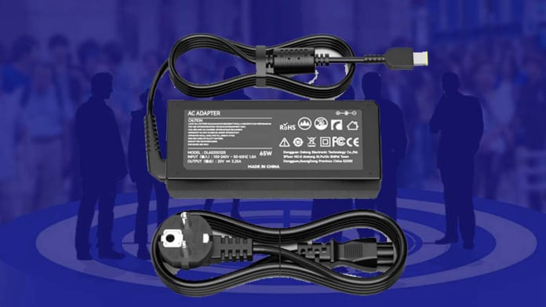
¿La batería de mi laptop no carga hasta el 100%, cual es la causa?
El sensor de la batería está dañado. La causa más común es que la laptop sufrió un daño físico una caída o ingreso agua al interior de la laptop.
¿Mi laptop solo funciona cuando está conectado a la tensión 220 v, a que se debe?
La batería ya tiene problemas, la solución más práctica es cambiar de batería.
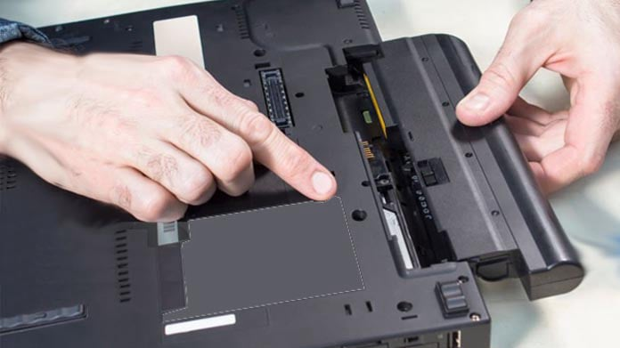
El disco duro es el periférico donde se graba el sistema operativo, los programas y los archivos que generan los programas que utilizamos.
Puede presentar fallas leves o fallas muy graves.
DISCO DURO DAÑADO PARCIALMENTE.
Es probable que el disco duro mecánico, este ya con algunos sectores dañados.
Solución parcial.
Hay que realizar un formateo total y profundo del disco duro y luego instalar nuevamente un sistema operativo adecuado.
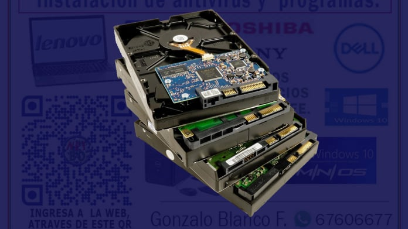
Solución final.
Cambiar el disco duro mecánico por un disco duro sólido.
¿Al formatear la pc, se pierde la información?
Sí, pero la información puede extraerse a un medio externo, o trasladarlo a la otra partición.
¿Los programas al formatear se pierden?
Si, pero pueden reinstalarse las mismas versiones.
¿Cambiando el disco duro, mi laptop será más rápida?
Si, al cambiarlo por un disco solido.
¿Mi laptop solo tiene un disco duro, esto puede ocasionar algún problema?
Si, lo más recomendable es dividir ese disco, en dos particiones.
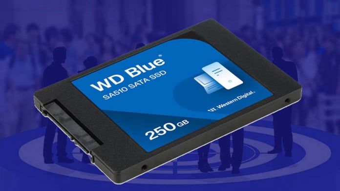
Mínimamente el disco duro de una laptop, debe contar con dos particiones. En la primera partición (disco C), generalmente se instala el sistema operativo y los programas.
En la segunda partición (disco D o E) se almacena la información (archivos).
¿Mi pc puede tener dos discos duros físicos?
Si, si es una computadora de escritorio, en la laptop, no hay espacio físico para instalar otro disco.
¿Se puede recuperar la información del disco?
Depende del daño que haya sufrido, pero en la mayoría de los casos puede recuperarse la información.
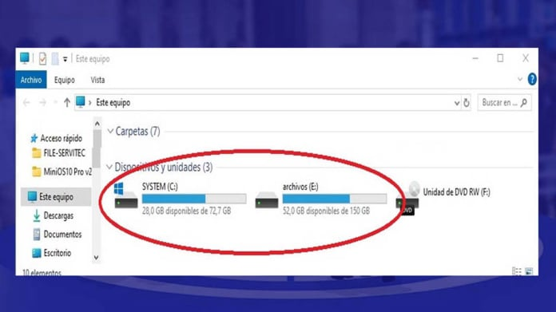
Aquí están algunas consultas sobre la pantalla.
¿La pantalla de mi laptop tiene unas manchas?
Posiblemente ya venía con algunas manchas pequeñas de fábrica, la solución más practica en este caso es cambiar de pantalla.
¿Mi pantalla tiene una línea vertical fija?
Ese sector la pantalla ya está dañado, también puede ser más de una línea o también líneas horizontales.
Si la pantalla está mal, que alternativas tengo?
1.- Cambiar la pantalla.
2.- Se puede conectar una pantalla externa y lo puede utilizar su laptop como pc de escritorio.
Actualmente toda la información podemos encontrarlo en internet, casi ya no se utiliza el lector de discos, en muchos casos, los lectores de discos de algunas laptops tienen daños físicos.
Por lo tanto, se puede hacer el reemplazo respectivo, pero todo depende del propietario.
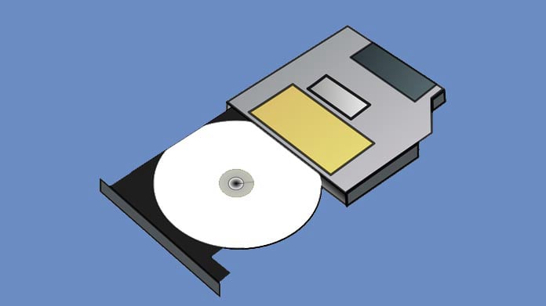
Cuando realizamos los diversos trabajos en la pc, lo estamos haciendo en la memoria RAM.
¿Se puede aumentar la memoria de mi pc?
Si, dependiendo del modelo y la capacidad máxima de memoria que puede instalarse en su laptop.
¿La memoria RAM, es lo mismo que disco duro?
No, son dispositivos diferentes. En el disco duro se almacena información que aún permanece al apagar el equipo.
En cambio, la memoria RAM se utiliza en los diferentes procesos que se realizan cuando la pc está funcionando.
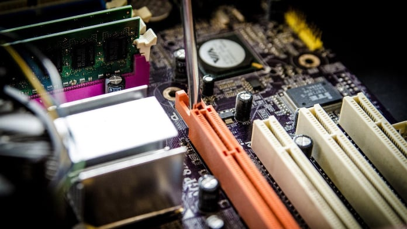
El ratón integrado de una laptop se llama touchpad o trapead.
Este mouse integrado puede dañarse, cuando se coloca ciertos objetos pesados sobre él o cuando nuestra laptop ha sufrido algún golpe en este sector.
Si ocurre eso, lo más conveniente es utilizar un mouse externo, conectándolo a un puerto USB. También se puede utilizar un mouse inalámbrico.
La impresora es un periférico de salida. Las fallas que más suelen ocurrir son de configuración. Actualmente todas las impresoras cuentan con sus drivers o controladores, a pesar de que una impresora se vende con su instalador, muchas veces los propietarios los extravían.
Otro contratiempo, a veces las impresiones tienen algunas líneas, para solucionar este inconveniente hay que hacer un mantenimiento como la limpieza de sus cabezales, para esto solo tiene que ir a configuración del sistema operativo, seleccionar la impresora y realizar este procedimiento.
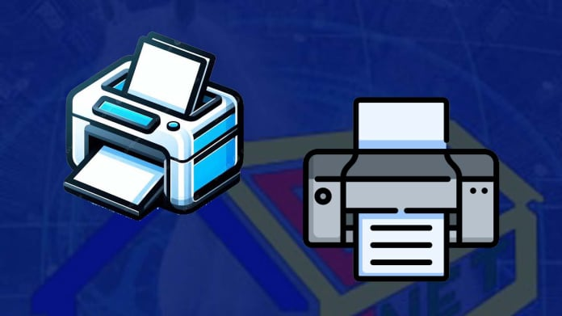
Algunas impresoras cuentan también con el escáner, en este caso también el escáner cuenta con su controlador.
De forma similar se puede descargar de internet el controlador correspondiente, y luego instalarlo en la computadora.
Si alguna impresora tiene el escáner y por la instalación de algún programa es posible que ya no escanee, hay que hacer una nueva instalación de sus controladores.
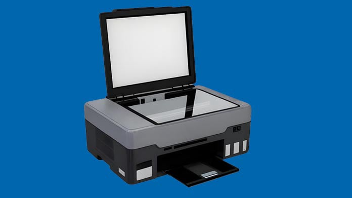
Los puertos USB son los medios por los cuales podemos conectar diferentes periféricos alternativos.
Por ejemplo, podemos conectar un mouse, una pantalla, un lector de discos, un adaptador de wifi. etc.
La mayoría de las laptops tiene un mínimo de 3 conectores USB.
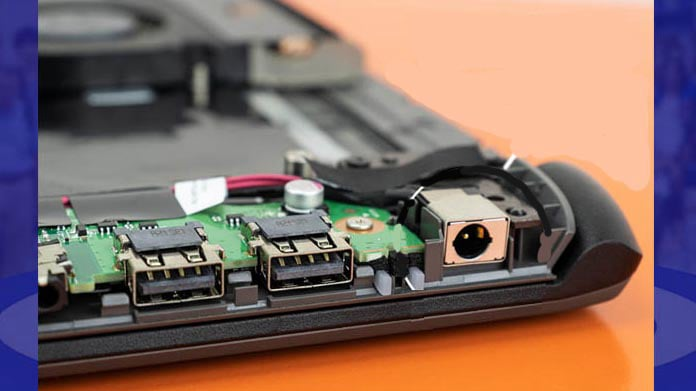
En algunos casos cuando se instala un sistema operativo nuevo o se hace alguna instalación adicional, el Wifi se desconfigura, por lo tanto, este detalle se puede solucionar.
Daño físico
Si la laptop ha sufrido algún daño físico puede también haberse dañado de forma definitiva el sistema de Wifi.
Para solucionar este inconveniente, se sugiere utilizar una adaptador Wifi portátil que se conecta a un puerto USB. (su apariencia es similar a un flash memory).
Mi pc ya no se conecta al wifi de mi celular?.
Debe revisar la configuración de su celular.
El wifi funciona a veces y en otras se corta.
Una posible causa puede ser que el sistema operativo de su laptop no es el adecuado, de acuerdo a sus características.
La solución en este caso es probar con otro sistema operativo.
¿Mi wifi ya no funciona?
Si tuvo algún daño físico su laptop, es posible que ya no tenga solución.
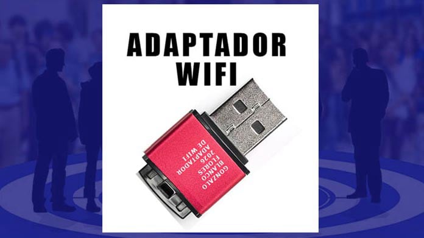
¿Tengo una pc de escritorio antigua, se puede actualizar?
Si, dependiendo de las características de la memoria, procesador y disco duro.
Los requisitos técnicos mínimos para instalar Windows 10 lite son las siguientes:
VELOCIDAD DEL PROCESADOR: 1Ghz o superior.
RAM INSTALADA: 2 GB se recomienda 4 GB.
DISCO DURO: 16 GB mínimo.
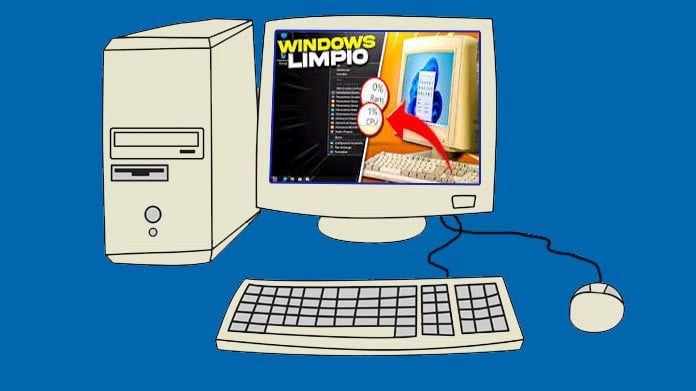
Los drivers de sonido se instalan junto al sistema operativo. En una laptop los parlantes pueden tener algún problema cuando no se oye nada. Se puede probar colocando unos audífonos en la salida correspondiente.
En cambio, en una pc de escritorio, se debe colocar unos parlantes externos para escuchar los archivos de sonido.
¿Los parlantes de mi laptop, ya no funcionan?
Si en un principio estaba bien, es posible que la instalación de algún programa, lo hayan dañado, pero puede solucionarse.
Nube se lo llama al espacio físico de un disco duro dentro de un servidor (computadora) que se encuentra ubicado en algún lugar del mundo.
Si usted cuenta con un correo gmail, tiene disponible 5 gigas de espacio en la nube para guardar sus archivos.
Estos servidores tienen equipos duplicados o triplicados en donde se guarda la información.
En un supuesto caso de que unos de estos servidores sufran algún ataque cibernético, rápidamente se activa el segundo servidor que contiene la misma información.
Este periférico nos permite introducir información, las fallas generalmente ocurren por la mala configuración o el sistema operativo tiene algún archivo perdido.
En el caso de que alguna tecla o teclas no funcionen, se debe a que posiblemente, hayan colocado algún objeto en ese sector del teclado. En este caso se deben realizar diferentes pruebas para determinar el daño exacto y aplicar la solución correspondiente.
En algunos casos extremos donde la falla involucre varias teclas importantes, se puede cambiar el teclado o conectar un teclado externo a través de un puerto USB.
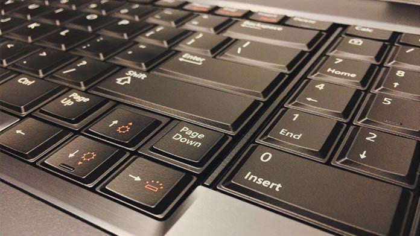
¿Los programas al formatear se pierden?
Si, se pierden los programas, pero pueden reinstalarse otras versiones de estos programas.
DESINSTALAR ALGUNOS PROGRAMAS.
Acceder al Panel De Control.
Buscar la opción programas, hace clic ahí.
Luego, clic en programas y características.
En la siguiente ventana, selecciona el programa que quiere desinstalarlo. En la parte superior, elige, Desinstalar.
Aparece una ventana para confirmar el proceso
Si está seguro, hace clic en si.
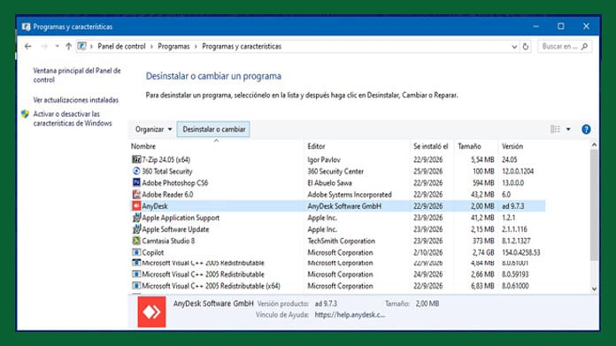
BORRAR ARCHIVOS TEMPORALES
Presiona las teclas Windows y la tecla R. Se despliega una pequeña ventana. Ahí escribe: %tmp% . Luego presiona el botón Aceptar. Aparece una ventana con archivos. Selecciona todo el contenido. Ahora presiona la tecla Suprimir y todos los archivos empezaran a eliminarse.
Este proceso se debe realizar de forma mensual o semanal.
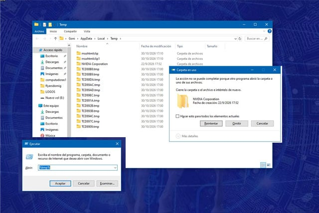
COMO VER LA VERSION DEL SISTEMA OPERATIVO
Para esto lo que tiene que hacer es lo siguiente:
Hace doble clic en Equipo.
Luego en el área de trabajo (espacio en blanco de la ventana).
Haces clic derecho.
Del menú que surge, haces clic en Propiedades.
Ahí puede ver.
La versión de su sistema operativo.
La memoria RAM y la velocidad del Microprocesador.
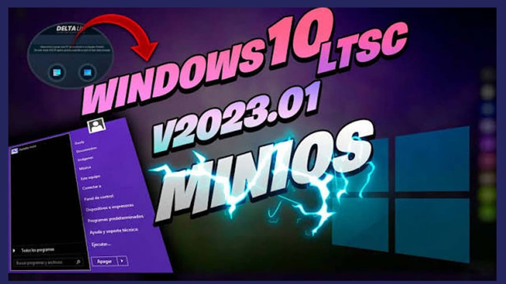
Este programa se instala de forma automática y a veces resulta incomodo cuando estamos trabajando.
Cuando hacemos doble clic sobre un archivo de word , este se abre con WPS office , lo cual es molestoso , para solucionarlo realizamos el siguiente procedimiento.
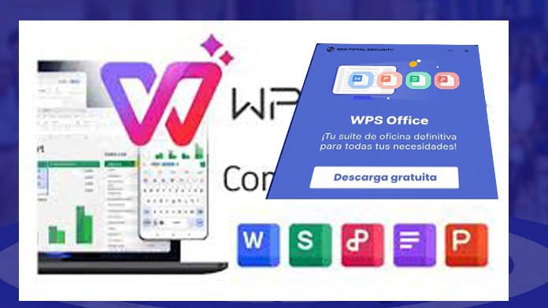
Si quieres ver la velocidad de internet en tu laptop o computadora, lo único que tienes que hacer es escribir
En la barra de direcciones lo siguiente: www.fast.com
Luego presionas la tecla Enter.
Después de algunos segundos, veras en pantalla, la velocidad actual de internet que está llegando a tu laptop.
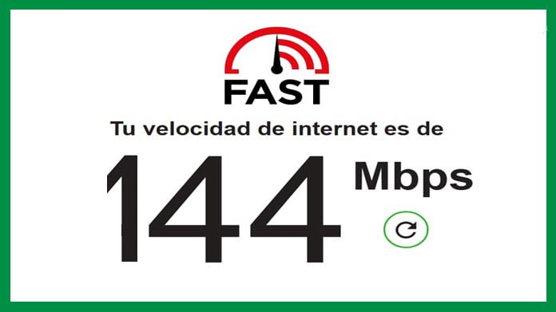
Para liberar espacio tiene que hacer lo siguiente:
Hace doble clic en Equipo, luego se ubica sobre el icono del disco duro C
Ahora hace clic en Propiedades, de la ventana que aprecia, en la Ficha general, puede ver el botón de comando Liberar espacio. Hace clic ahí.
Luego después de algunos segundos, aparece una nueva ventana en donde debe seleccionar todas las casillas de verificación. Luego hace clic en Aceptar.
Después de algunos minutos, desaparece la ventana .
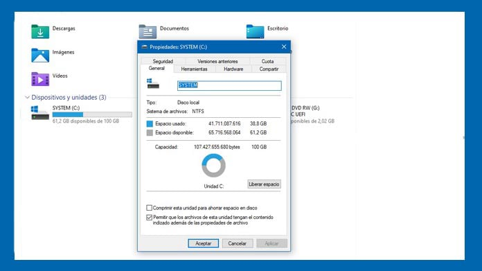
PPor la activación de algún virus, se oculta el contenido de nuestra memoria flash, si tenemos información importante aquí describo como desbloquearlo
Para ver el contenido de la memoria flash, utilizaremos los comandos D.O.S.
Para esto va hacer lo siguiente:
Insertamos la memoria a un puerto USB.
Hace clic en inicio y en el cuadro de búsqueda.
Escribe cmd y presiona la tecla Enter.
Aparece una ventana con un fondo negro con lo siguiente, ejemplo:
c:\Users\hg>
En este ejemplo la letra de la memoria será, la E (puede ser otra letra ),
ahí escribe sin las comillas, lo siguiente: “E:”
luego presionamos la tecla Enter.
Y ahora se ve en la pantalla: “E:\>”
Ahora, después del símbolo mayor que,
escribimos: attrib –a –s –h –r /s /d
Luego presionamos la tecla Enter.
Ahora revisa su flash y puede ver el contenido de su memoria.
Por último, cierra la ventana negra.
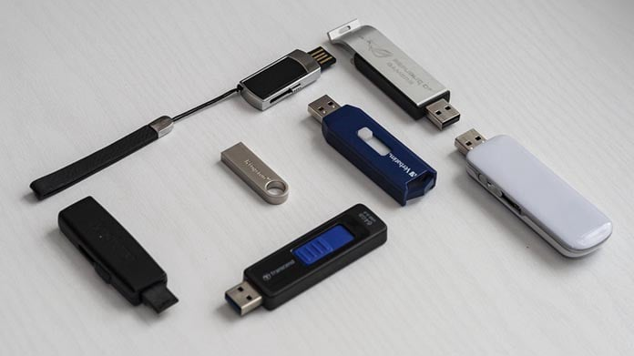
A partir de la versión 2016 del office, se puede hacer este proceso.
Con su documento abierto, hace clic en Guardar Como
Luego en la ventana que surge del lugar donde se ve el nombre del archivo.
En la siguiente línea, se ve la opción tipo de archivo.
Ahí tiene que elegir Pdf.
Luego coloca el nombre al archivo y luego hace clic en Guardar.
DE PDF A WORD.
Después de ingresar a Word, debe buscar su archivo pdf.
Cuando lo ubique hace clic en Abrir.
Word le mostrara un mensaje que te dice que Word lo convertirá a texto,
Haces clic en Aceptar.
Esperas algunos minutos. Ahora su archivo pdf está abierto en Word.
El propietario tiene que informar con detalle en que momento ocurrió la falla y cuáles son los síntomas que presenta la laptop.
De esta forma se puede de determinar la causa de la falla con mayor precisión y luego aplicar la solución más adecuada
Un técnico puede determinar en muchos casos si es que el equipo fue llevado a otro lado, pero para esto, requerirá un mayor tiempo de pruebas y eso lógicamente puede encarecer el costo del servicio.
La reparación no solo consiste en cambiar algo.
Aparte del procedimiento que se realiza, también hay que realizar algunas pruebas para que la falla no se vuelva a repetir y estas pruebas consumen un tiempo adicional.
TIEMPOS:
1. Verificación o diagnóstico.
2. Traslado de archivos de una unidad a otra.
3. Instalación del nuevos sistema operativo y programas.
4. Traslado de la información a su sitio de origen.
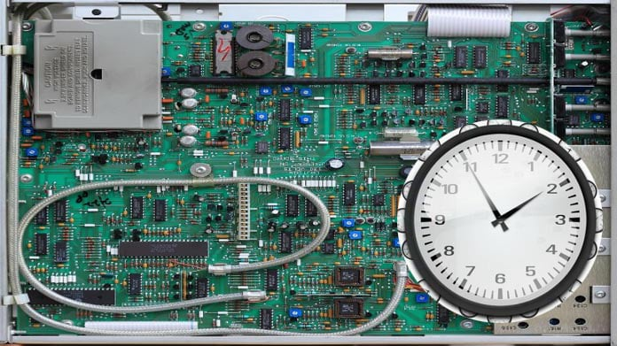
Offline Website Creator